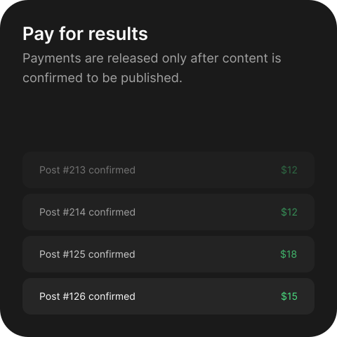

Music promotion through content
Reach new audiences and build social engagement around your music through social media content.
Discover music that fits your content and get paid to feature it in your social media posts.
Musin is a platform that connects tracks with content creators who can feature them in their social media posts.
For artists, managers and labels, Musin provides a direct way to generate content around a track at scale generating wide audience engagement around music.
For content creators, influencers and agencies, Musin offers an opportunity to earn by posting on social media with selected music.


3,818
Tracks available now
8,024
Content creators active

FAQ
Why does content drive music discovery?
People discover music while watching videos they already enjoy. When a track becomes part of relevant social content it reaches audiences in a natural and memorable context.
How is content-based promotion different from traditional advertising?
Traditional advertising asks people to stop and pay attention. Content-based promotion places music inside something they already chose to watch.
Why do content creators matter in music promotion?
Creators already understand their audience and know what type of content performs well. Their posts can introduce a track to communities beyond the artist’s existing followers.
What makes music placement feel authentic?
Content creators choose tracks that fit their style and decide how to use them. This creative freedom helps the music feel like part of the content rather than a forced advertisement.
How does Musin help promote music?
Musin lets music artists launch campaigns, choose suitable social media accounts, manage publications and release payment after each completed post is confirmed.
How does Musin help content creators?
Creators can discover paid music opportunities, choose tracks that suit their content, publish in their own style and get paid for confirmed posts.
Why use Musin instead of arranging collaborations manually?
Musin brings track discovery, account selection, campaign management, post confirmation and payments into one place instead of relying on scattered messages, spreadsheets and individual negotiations.